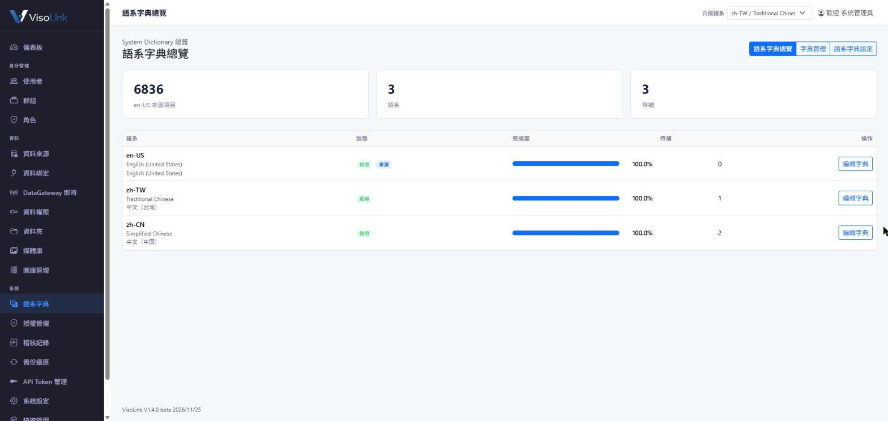
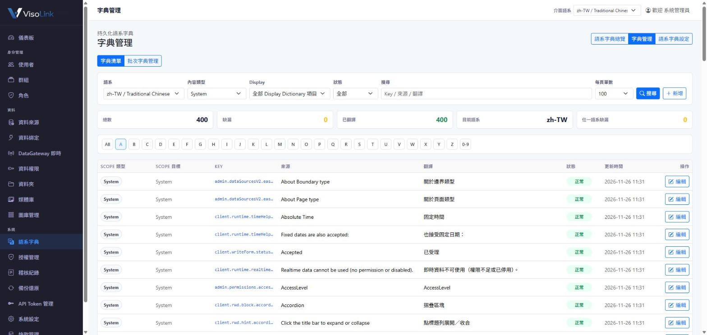
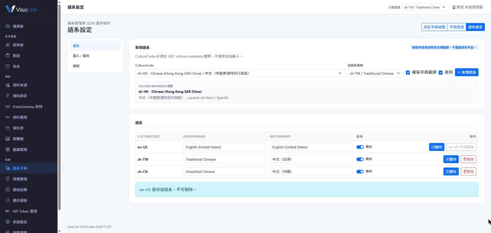

Localization 多語系
管理系統與 Display 字典、翻譯完成度、語系狀態及翻譯檔案移轉。
查看語系總覽

- 點選「系統 → 語系字典」。
- 查看各語系啟用狀態、完成度與 Pending 數。
- 點選 Edit Dictionary 進入目標語系。
搜尋與篩選字典

- 進入 Dictionary Management。
- 選擇 Culture 與 Content Type。
- 使用 Display、Status、Keyword 或字首縮小結果。
- 設定每頁筆數並套用。
新增、編輯與刪除字典項目
- 點選 Add 或既有項目的 Edit。
- 設定 Key、來源文字、翻譯與適用範圍。
- 儲存後切換前台介面語系驗證。
- 刪除前確認 Key 不再使用，依雙重確認流程刪除。
切換語系後，目標介面顯示新翻譯且沒有露出 Key。
執行字典批次作業
產生內容鎖定語系與待翻譯範圍
先驗證檢查格式、Key 與錯誤摘要
再儲存抽查前台顯示結果
- 開啟 Batch 面板並產生待處理內容。
- 下載或複製內容進行翻譯。
- 貼回批次輸入並先點選 Validate。
- 修正錯誤後才執行 Batch Save。
新增語系

- 進入 Localization Settings。
- 選擇新語系代碼與選填複製來源。
- 設定新增後是否啟用。
- 點選新增並確認總覽出現新語系。
啟用與停用語系
- 在語系清單找到目標。
- 切換 Enabled。
- 儲存後重新整理。
- 確認 Client 與 Admin 的介面語系選單結果。
目標語系依設定出現或離開介面語系選單。
刪除語系
來源語系及保留語系受到保護；刪除其他語系會一併移除其翻譯。
- 先匯出語系字典備份。
- 確認語系已不再提供給使用者。
- 點選刪除並確認。
匯出語系字典
- 在 Settings 選擇匯出。
- 下載 JSON 檔案。
- 以語系與日期命名並存放於受控位置。
驗證字典匯入內容
- 選擇要匯入的 JSON 檔。
- 點選 Validate Import。
- 查看新增、更新、忽略與錯誤摘要。
- 有錯誤時修正來源檔後重新驗證。
套用字典匯入
- 只有驗證結果有效時才點選 Apply Import。
- 確認成功摘要。
- 返回 Dashboard 檢查 Pending 與完成度。
- 以前台實際切換語系驗證文字。